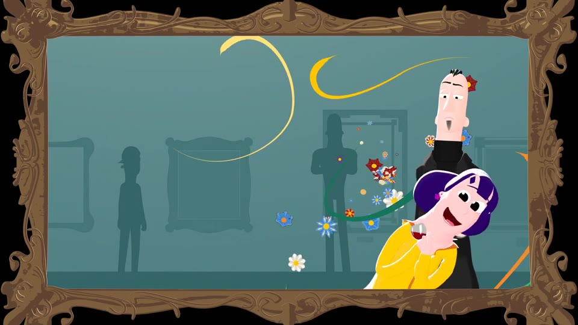

新的画面版本
72秒主版与24秒独立短版，960×540、24fps。短版重新选段，不能用主版音轨的连续裁切直接完成。
原配乐工程丢失，画面也已重剪。从160段匿名音乐中理解主题、乐句与配器，重建服务新叙事的配乐，再完成独立短版。
试听模型结果 ↓
Sol完成交付：辅助小计56.65/98、57.26/98。dpsk4.1flash未完成：中间音乐诊断58.06/95、58.91/95。分母不同，不折算或排列名次；正式总分均未形成。
评分范围与证据 ↗主版 · 72秒 · GPT-6.1 Sol · 原始成片预览
服务器生成的压缩预览；原始MP4、WAV和工程保存在原始交付包中。
72秒主版与24秒独立短版，960×540、24fps。短版重新选段，不能用主版音轨的连续裁切直接完成。
160段立体声WAV，约31.72分钟：50段来自原作真实独立音乐cue及重叠乐句，110段来自其他获许可音乐。没有对白、角色发声、拟音或混合原声锚点。
完成两版MP4与WAV、自包含REAPER工程、实际剪辑与素材映射、制作说明和署名。来源、工程与重渲染作为门槛，工程不加内容基础分。
不提供原片混音、正确素材ID、旧工程、画面事件表或示范工程。原作独立音乐并非乐器级分轨；允许多种成立的配乐设计。
两版成片与原生工程完整。迁移至离线目录后，REAPER重渲染与交付WAV逐样本一致。
E5声像/单声道兼容2分未评。正式总分未形成，未评项不补分，辅助小计不折算为百分制。
| 维度 | 满分 | 辅助一 | 辅助二 |
|---|---|---|---|
| 音画音乐回应 | 35 | 22.65 | 22.51 |
| 结构与剪辑连续性 | 25 | 12.25 | 14.00 |
| 主题、配器与素材适配 | 20 | 12.00 | 10.00 |
| 短版适配 | 10 | 4.00 | 5.00 |
| 混音 | 10 | 5.75 | 5.75 |
主要情绪对照可辨，但乐句与尾音交接、后段叙事区分及短版连接不足。
输出预算耗尽，未提交两版MP4、规定位置WAV、剪辑清单、制作说明与署名；工程仍使用绝对路径。以下仅诊断已有中间音乐。
E3剪口/尾音技术质量3分、E5声像/单声道兼容2分未评。正式总分未形成，未评项不补分，辅助小计不折算为百分制。
| 维度 | 满分 | 辅助一 | 辅助二 |
|---|---|---|---|
| 音画音乐回应 | 35 | 22.31 | 22.66 |
| 结构与剪辑连续性 | 25 | 14.00 | 15.00 |
| 主题、配器与素材适配 | 20 | 12.00 | 12.00 |
| 短版适配 | 10 | 5.50 | 5.00 |
| 混音 | 10 | 4.25 | 4.25 |
中间音轨含实际剪辑，但跳接生硬，短版过渡机械。两次判词对局部配器也有分歧，需复听核实。
两模型的候选接口均没有原生音频或视频输入，使用抽帧图片、shell及音频数值分析。应将本轮视为工具辅助制作测试；不能仅凭低分声称原生听觉理解失败。制作、评测与打包均在服务器Docker中完成。
| 门槛 · 不计基础分 | Sol | dpsk |
|---|---|---|
| 锁画、格式与两版成片 | 通过 | 未通过 |
| WAV/MP4一致性 | 通过 | 未通过 |
| 原生工程迁移复现 | 通过 | 未通过 |
| 素材及剪辑清单追溯 | 通过 | 未通过 |
| 署名与改编说明 | 通过 | 未通过 |
| 预算、离线与冻结完整性 | 通过 | 通过 |
每个模型有两次匿名Qwen3.8音画辅助调用，来自同一个模型，不等于两名人工专家。送审包含4fps画面与显式320kbps音轨；未提供模型身份、制作说明或主办方参考。
Sol另有2分未评；dpsk另有5分未评。未评不记零、不补满，不把已评小计换算成100分。正式总分均为null，仍需人工复核。
Sol完整精度计算 ↗dpsk完整精度计算 ↗dpsk在122次调用后耗尽全部输出预算。已有两份RPP和中间WAV，但缺少规定交付，工程迁移失败。主办方只封装中间WAV与锁画供试听，未修改声音或修复工程。
有可听中间音乐，因此不套用“全部静音得0”的例外；但诊断分也不能变成合格提交。两次辅助判词对局部配器有分歧，相近数字不能证明听辨准确。
未完成交付的完整报告 ↗网页媒体制作与来源记录 ↗| 维度 | 分值 | 高分标准 |
|---|---|---|
| A 音画音乐回应 | 35 | 九个冻结观察窗口中，音乐表达叙事、时间关系、段落内发展及选择性。 |
| B 结构与连续性 | 25 | 乐句能重构，接段与尾音自然，主版具有整体弧线和呼吸。 |
| C 主题与配器 | 20 | 主题复现有意义，音色、音区与密度适合画面，近似素材取舍成立。 |
| D 短版适配 | 10 | 24秒有独立结构，按新画面重新组织落点，首尾可直接使用。 |
| E 混音 | 10 | 响度与真峰值2分客观计算；剪口/尾音、动态清晰度及声像8分试听。 |
画面与声音制作素材：Glass Half (2015)，Blender Studio / Blender Institute。原作音乐Bjarni Biering Margeirsson，附加音乐Beorn Leonard。其他音乐Kevin MacLeod（incompetech.com），CC BY4.0。
当前独立资产页标注CC BY4.0，历史项目整体页标注CC BY3.0，两份依据均保留。题目对画面重剪、去声和缩放；音乐作声道配对、取段、增益与匿名化。网页原片声音按新画面取段，仅供对照。
完整作品署名与修改说明 ↗素材许可边界 ↗原作官方项目 ↗